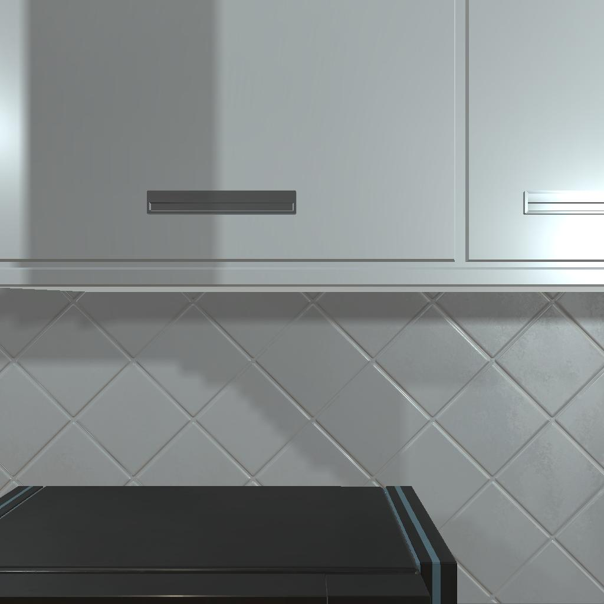

---------------------------------------------------------task: 21---------------------------------------------------------
--------------------------------------------------------------------------------------------------------------------------------------------------------------------
--------------------------------------------------------------------------------------------------------------------------------------------------------------------
Step:--------------------------------------------------------------------------7-------------------------------------------------------------------------------
----------------------------------------
VLM Prompt:
**Task**
Please perform as an embodied AI agent. Our final objective is to heat some cup and put it in countertop. Below is the plan for completing the task, the current observation, alongside historical data and admissible actions for the next step. Please determine the best action for the next step!
**Plan**
Below is a detailed step-by-step plan to complete the task.
1. Find a cup.
2. Pick up the cup.
3. Find a microwave.
4. Heat the cup with the microwave.
5. Find a countertop.
6. Place the heated cup on the countertop.
**Current Observation**
Displayed is an image capturing the current position of the agent.
**History Information**
Displayed are the previous observations with their corresponding actions.
Current State 1:
1. Place: Kitchen
2. Step Index in Plan: 1
3. Objects: Sink, Fork, Spoon
4. Action: Go to cabinet 1
Current State 2:
1. Place: Kitchen
2. Step Index in Plan: 1
3. Objects: Cabinet
4. Action: Open cabinet 1
Current State 3:
1. Place: Kitchen
2. Step Index in Plan: 1
3. Objects: Plate
4. Action: go to cabinet 3
Current State 4:
1. Place: In front of cabinet 3
2. Step Index in Plan: Step 1
3. Objects: Cabinet 1 (empty of cups), Cabinet 3 (contains a plate)
4. Action: Open cabinet 3
Current State 5:
1. Place: In front of cabinet 3
2. Step Index in Plan: 1
3. Objects: Cup, Plate
4. Action: Go to cabinet 4
Current State 6:
1. Place: In front of cabinet 4
2. Step Index in Plan: 1
3. Objects: Cabinet 4
4. Action: Open cabinet 4
Current State 7:
1. Place: Kitchen
2. Step Index in Plan: 1
3. Objects: Cup, Cabinet 4
4. Action: Close cabinet 4
**Admissible Actions**
(1): go to cabinet 1
(2): go to cabinet 2
(3): go to cabinet 3
(4): go to microwave 1
(5): go to cabinet 5
(6): go to cabinet 6
(7): go to countertop 1
(8): go to coffeemachine 1
(9): go to toaster 1
(10): go to countertop 2
(11): go to sink 1
(12): go to sinkbasin 1
(13): go to fridge 1
(14): take saltshaker 1 from cabinet 4
**Analysis Guideline**
1. Analyze the **History Information** and determine our current step in the plan and our current place.
2. List all visible objects related to the task in the current observation.
3. Analyze the objects in the current observation based on the history and the requirements for the current step, and then determine if we can complete the step with the current observation.
4. Analyze and decide on the most appropriate action to take.
5. Summarize the analysis using the following format: "Analysis: [The summarization of the analysis], The Most Appropriate Action: (i which is the integer.): [Selected action]"
**Notes**
1. We must complete each step of the plan in order and cannot skip steps when the previous ones are not finished.
2. For "Go to" actions listed as "go to xxx [n]", interpret this as there are n distinct actions available: "go to xxx 1", "go to xxx 2", ..., "go to xxx n". Select one specific action from these options instead of using "go to xxx [n]".
3. If receptacles such as drawers, cabinets, and so forth are closed in the current observation, we may try to open them.
4. Pay attention to synonyms and ensure clarity in the terms used.
5. If there is no history available, we are at the first step and the current place is "Unknown".
6. The most appropriate action must be in the **Admissible Actions**, and we cannot generate a new action that is not in the **Admissible Actions**.
**Answer**
Please select the most suitable action by following the **Analysis Guideline**, keeping the above **Notes** in mind.
----------------------------------------
----------------------------------------
VLM Response:
Analysis: According to the History Information, we are currently on Step 1 of the plan, which is to find a cup. From the previous actions, it's clear that we have already checked cabinets 1, 3, and 4, and we have found a cup in cabinet 3. The current observation shows we are in front of a closed cabinet, which could be cabinet 3 as we have not taken the cup yet. Since we are looking for a cup and we know from history that cabinet 3 contains a cup, the most appropriate action is to open cabinet 3 and take the cup to proceed to the next step in the plan.
The Most Appropriate Action: (3): go to cabinet 3
----------------------------------------
----------------------------------------
>>> Refine VLM Response and Get Pure Action: go to cabinet 3
----------------------------------------
-----------------------------------------------------------------
Running time: 9.684778690338135 seconds
Total Money: 10.334029999999997
-----------------------------------------------------------------
-----------------------------------------------------------------
Summarization Prompt:
**Context**
Analysis: According to the History Information, we are currently on Step 1 of the plan, which is to find a cup. From the previous actions, it's clear that we have already checked cabinets 1, 3, and 4, and we have found a cup in cabinet 3. The current observation shows we are in front of a closed cabinet, which could be cabinet 3 as we have not taken the cup yet. Since we are looking for a cup and we know from history that cabinet 3 contains a cup, the most appropriate action is to open cabinet 3 and take the cup to proceed to the next step in the plan.
The Most Appropriate Action: (3): go to cabinet 3
**Summary Format**
1. Place: [Specify the current location]
2. Step Index in Plan: [Dispkay the current step number in the plan before taking the current action]
3. Objects: [List the objects relevant to the task]
4. Action: [Describe the most appropriate action without the "(x)" and keep the integer of the object]
Please analyze the **Context** and summarize the analysis using the **Summary Format**.
-----------------------------------------------------------------
-----------------------------------------------------------------
Summarization Response:
1. Place: In front of a closed cabinet
2. Step Index in Plan: Step 1
3. Objects: Cup, Cabinet 3
4. Action: Go to cabinet 3
-----------------------------------------------------------------
-----------------------------------------------------------------
Text Observation:You arrive at loc 2. The cabinet 3 is open. On the cabinet 3, you see a bowl 1, and a plate 1.
-----------------------------------------------------------------
UNSUCCEED